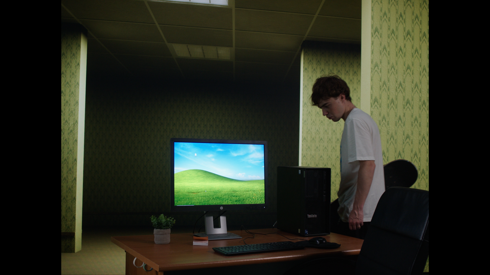
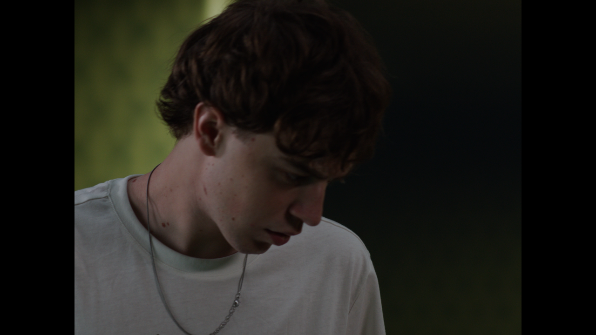
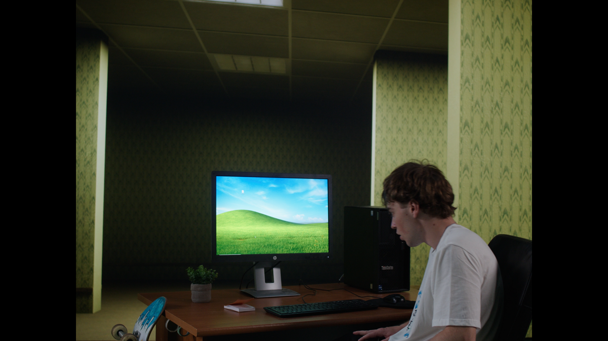
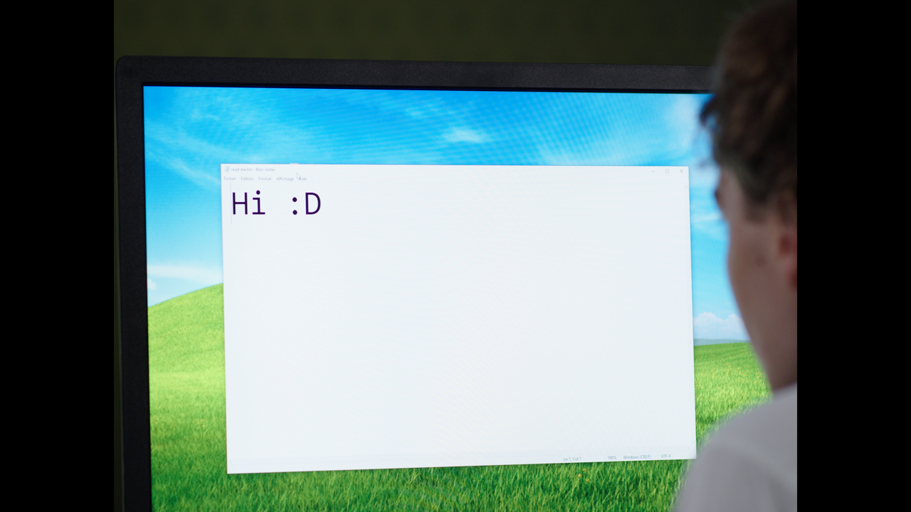

Previous slide Next slide Toggle fullscreen Toggle overview view Open presenter view
Dossier Professionnel · Superviseur de Production Virtuelle
NoClip
Quand le décor n'a plus de sortie.
Etienne Baron · 2ème année SPV · École Georges Méliès (Orly, Grand Paris)
NoClip et le dispositif retenu
Court-métrage de fin d'études, ≈ 5 min , thriller psychologique, scénario de Charlotte Strauch .Backrooms
Ma mission : concevoir, préparer et superviser sur le plateau toutes les séquences Backrooms .
Règle d'arbitrage du dossier
Décor réel au skatepark (début, fin) · mur LED pour les plans où la lumière jaune baigne
l'acteur · fond vert pour les inserts et gros plans.
Plateau de l'école (mur LED)
Sony Crystal LED VERONA , pas 1,56 mmVENICE 2 · Zeiss 24/35/50/85Zeiss CinCraft Scenario RTX A6000 (+ 2080 supervision)figée au pré-light, sol en drap noir
Deux simplifications décidées en amont : plan de feu fixe (pas de DMX / Art-Net) et drap noir
plutôt que moquette (une moquette claire renvoie le jaune du mur).
Dossier Professionnel SPV · NoClip · Etienne Baron
La préparation : prévu contre réel
Phase
Prévu
Réel
Découpage VP · Blockout
Janv. · Fév.
non formalisés raccord d'échelle jamais validé
Modélisation, optimisation
Mars–avril
Mars–juin, sans revue d'asset de ma part
Tests plateau
Mai
aucun première mise en œuvre = matin du tournage
Répétition technique 23 juin n'a pas eu lieu
Tournage
24 juin
tenu et bouclé légèrement en avance
Un jalon imposé n'est pas un jalon tenu : c'est un mur
Toutes les phases amont ont absorbé le retard. Le seul jalon qui protège une journée de plateau
est la répétition technique de la veille — celui que j'ai sacrifié.
Dossier Professionnel SPV · NoClip · Etienne Baron
II · Le jour J et la régie
24 juin : 40 °C et un tracker hors service
Ce qui s'est passé
40 °C à l'ombre. Ventilation active sur le mur LED et sur les stations. Le Zeiss CinCraft présente desdésactivé toute la journée .
Hypothèse : une chance sur deux que l'usage répété et la montée en température l'aient rendu inutilisable.Cause jamais établie.
Repli : frustum recalé à la main, caméra sur pied, plans fixes à légèrement panoramiques . Journée bouclée sans temps mort.
Ce que je mettrais en place
Une check-list de diagnostic à dérouler en cas de panne : le stress d'une préparation tardive réduit le discernement.
Un second tracker prêt à être monté.
Une liaison étroite avec le fabricant jusqu'au jour J, avec retours d'expérience bons comme mauvais.
Un angle mort du marché
Zeiss ne publie pas de données de tenue thermique ou environnementale du tracker.
Dossier Professionnel SPV · NoClip · Etienne Baron
II · Le jour J et la régie
La feuille de route de la régie
La veille, après les répétitions lumière
Brief général à toute l'équipe :
distance minimale au mur LED, pour ne pas l'endommager ;ne jamais passer devant la caméra ;ne pas demander une tâche à un autre corps de métier que celui qui en a la charge.
Binômes
machinos ↔ électros · moi ↔ réalisation, DoP, technicien 3D · assistant caméra ↔ DoP
Le jour J, dans l'ordre
1 · Allumage2 · Calibration3 · Tests du tracking caméra et des optiques4 · Raccords lumière→ en cas d'anomalie : check-list de diagnostic
Qui touche à quoi
L'opérateur 3D agit sur les ordinateurs uniquement. Je gère le plateau et ne reprends
la main sur l'ordinateur que sur retour de la réalisation ou de l'image.
Dossier Professionnel SPV · NoClip · Etienne Baron
II · Le jour J et la régie
Mobiliser l'équipe : quatre étapes
0
Donner du sens
1
Identifier les leads
2
Fixer le cadre
3
Valider au fil de l'eau
D'où la double casquette
Sur un projet de cette taille, il faut quelqu'un qui décide du découpage en connaissant le coût de fabrication
de chaque plan . C'est la direction dans laquelle je veux faire évoluer mon profil.
Dossier Professionnel SPV · NoClip · Etienne Baron
Ce que le dispositif a produit




Images du montage final, non des prévisualisations.
Acquis
Le jaune du décor baigne réellement le visage de Ryan, capté in-camera ; le drap noir tient les
noirs ; prises superposables.
Perdu
Quatre plans, aucun mouvement d'appareil, aucune parallaxe : sans tracking, le mur n'est plus qu'un grand fond lumineux.
Dossier Professionnel SPV · NoClip · Etienne Baron
Les choix de tournage ont décidé de la direction artistique
Choix
Ce qu'il a donné
Ce qu'il a coûté à l'image
Plan fixe (tracking HS)Davantage d'itérations de cadrage, qui n'était qu'ébauché
Aucun mouvement pour « creuser » le décor
Drap noir au solNoirs tenus, pas de retour du jaune
A coupé une scène en plan large et cadrage général
Plan de feu fixe Prises superposables, étalonnage sans dérive
Pas de flicker : un manque conséquent pour le rendu final
Idée du skateboard devant le murRien : non retenue
Trop de temps investi sur un thème pourtant évident : la transgression, les limites
Jugement affiné depuis la rédaction du dossier
Le dossier juge l'absence de flicker sans conséquence. Avec le recul, je la compte comme un vrai manque : un flicker
aurait pu interagir avec le raccord lumière et nourrir l'oppression voulue par la note d'intention.
Dossier Professionnel SPV · NoClip · Etienne Baron
Le reproche technique le plus précis : le point nodal
Pourquoi cela compte sur un mur LED
Le point nodal est le point autour duquel la caméra pivote pour que la perspective du fond reste juste.
Mal renseigné , nDisplay affiche une géométrie légèrement fausse, et la distance caméra → mur, qui fixe
le plan de netteté, devient approximative.
Faute de relevé, l'ouverture a été choisie à vue : arrière-plan trop net, texture du mur qui remonte.
Ma règle
Aucun plan LED sans relevé écrit du point nodal de l'optique montée, de la distance au mur et de l'ouverture.
Trois valeurs, une ligne dans le rapport image.
Dossier Professionnel SPV · NoClip · Etienne Baron
Le fond vert : bonnes pratiques, et pourquoi pas pour NoClip
Bonnes pratiques
Éclairer l'arrière-plan et le premier plan séparément : le fond vert uniforme, le sujet pour lui-même.Mise au point et ouverture sur le sujet : le fond n'est pas la référence de netteté.Distance sujet–fond suffisante pour limiter le spill vert, corrigé ensuite par le despill au compositing.
Utilisé dans le dossier pour les inserts et gros plans (dispositif B, cyclo vert de l'école).
Pourquoi pas pour tout NoClip
On perd l'éclairage ambiant global
Devant un fond vert, il n'y a plus la lumière diffuse du décor qui donne aux Backrooms leur atmosphère :
un mélange de poisseux et de mort . Le mur LED, lui, la fabrique et la fait tomber sur le visage.
Dossier Professionnel SPV · NoClip · Etienne Baron
Budget de la partie VP
≈ 25 k€
location VP, 1,5 jour
≈ 6,2 k€
masse salariale VP
≈ 31 k€
budget estimé
La location : un ordre de grandeur
Tarif moyen constaté, à discuter en amont avec la production . Les méthodes de devis varient selon les
prestataires. On négocie une prestation avec retour sur investissement du matériel , pas un prix cassé.
La masse salariale : l'autorité des grilles
Je n'ai chiffré que les minima syndicaux , qui font autorité. Sans alternance, je n'ai pas de tarifs
de marché de première main.
Dossier Professionnel SPV · NoClip · Etienne Baron
Bilan carbone d'une journée de plateau VP (8 h)
Poste
Hypothèse
Énergie
Mur LED 26,7 m² × 292 W/m² (moy.) × 8 h, +10 % d'auxiliaires
68,7 kWh
Stations
2 stations × 1 kWh
2,0 kWh
Éclairage
panneau 229 W + tube 36 W × 8 h
2,1 kWh
Total ≈ 72,8 kWh
≈ 3,8 kg
CO₂e à 0,052 kg/kWh
94 %
de l'énergie part
≤ 7,3 kg
borne haute, mur à
Dimensions du dossier (centre + deux volets) · fiche Sony ZRD-VP15EB · méthode Sightled · référence Ecoprod. Hypothèses détaillées en annexe.
Dossier Professionnel SPV · NoClip · Etienne Baron
V · Quel projet pour la VP ?
Le dispositif ne convenait pas à NoClip
NoClip demandaitUn plateau VP avec régie suppose
Plans fixes, cadres symétriques, séquences truquées courtes
Mouvements d'appareil, parallaxe, interaction acteur / décor
Petite équipe polyvalente
Équipe étoffée : LED, tracking, régie
Charge concentrée en post-production
Charge concentrée sur le plateau
Mon arbitrage manqué
Un surcoût d'équipe inutile, et c'est précisément le genre de décision qu'un superviseur doit rendre avant
qu'elle ne coûte . Le dispositif D (décor neutre + fabrication hybride) aurait été le bon choix : il est en annexe.
Dossier Professionnel SPV · NoClip · Etienne Baron
V · Quel projet pour la VP ?
Quand la production virtuelle est le bon choix
Ce qu'elle fait mieux que tout
Reflets · optiques non conventionnelles · lumières dynamiques · effets SFX (fumée, projections d'eau) captés in-camera .
La condition
Des équipes bien rodées : cela limite le terrain d'expérience de nombreux jeunes réalisateurs.
Un autre usage : le plateau interactif
L'Allemagne a davantage exploré la VP du côté du jeu télévisé et de l'interactivité que la France, plus centrée
Repère : SWR, Fehler im System
Studio 6, Baden-Baden · 24–25 oct. 2025
Dossier Professionnel SPV · NoClip · Etienne Baron
V · Quel projet pour la VP ?
Cinq questions avant de choisir la production virtuelle
1 · Le décor est-il réel ou non ?2 · S'il est réel, existe-t-il un moyen de le rendre tangible, sans artifice ?3 · Quelle place a le décor dans la mise en scène (hors champ, arrière-plan…) ?4 · Y a-t-il plusieurs décors très différents à enchaîner dans la production ?5 · Quel coût y consacrer, en rapport à son importance (un rapport, pas un prix) ?
Une grille codépendante
Elle se remplit avec la réalisation et la production, dès le début de l'écriture : c'est là que se décide
la faisabilité de chaque plan.
Dossier Professionnel SPV · NoClip · Etienne Baron
VI · L'année sans entreprise
Une année sans entreprise : veille et réseau
Ce que j'ai construit
Une veille soutenue sur l'IA appliquée aux industries créatives, sur trois fronts : outils , économie des métiers ,cadre normatif (AI Act, souveraineté).
Creative Machines · jam de Rennes (4–6 avril 2026)
Le goulot d'étranglement n'est presque jamais la génération : il est dans la direction , la
cohérence et l'assemblage . Les équipes qui livrent ont tranché leur intention tôt .
Ce que cela n'a pas apporté
Pas de plateau professionnel, pas de pipeline éprouvé, pas de hiérarchie technique pour corriger un geste.
Mon ingénierie plateau (calibration, signaux, nDisplay) reste théorique et peu pratiquée .C'est le premier écart à combler, et il ne se comble qu'en studio.
Dossier Professionnel SPV · NoClip · Etienne Baron
VI · L'année sans entreprise
Veille outillée : le CLI, mon harnais, une méthode
Les outils deviennent adressables
Les logiciels se pilotent de plus en plus en ligne de commande et par script : c'est ce qui les rend adressables parscripting redevient discriminant pour un superviseur.
Mon garde-fou
Tout outil qui ne sait pas répondre à « comment versionne-t-on ce résultat ? » reste hors pipeline.
Ce dossier est un prototype
Méthode ICM (Jake Van Clief) : la structure de dossiers est l'architecture de l'agent. Cinq couches, une
Où s'exécute le modèle est une décision de supervision
Modèle frontière pour la méthode et les documents publiables ; inférence locale dès que
la donnée est critique (rushes, scénario non déposé).
Dossier Professionnel SPV · NoClip · Etienne Baron
VI · L'année sans entreprise
Projet professionnel
Court terme
Opérateur en structure de plateau LED ou de prestation VFX temps réel : opérateur 3D, assistant superviseur,
Pas un repli : l'expérience de plateau répétée est ce qui me manque.
Moyen terme
Superviseur VFX à double casquette , en amont du découpage.
Sa valeur : dire quel dispositif ne pas utiliser.
En parallèle
Le framework de documents de travail pour le suivi audiovisuel : notes de supervision, rapports image,
Ce que NoClip m'a appris
Décider tôt, écrire ce que je décide, et savoir refuser un dispositif que le projet ne justifie pas.
Dossier Professionnel SPV · NoClip · Etienne Baron
Merci
Etienne Baron · 2ème année Superviseur de Production VirtuelleDossier_Professionnel_SPV_NoClip_BARON.pdf
Transparence — usage de l'intelligence artificielle (AI Act, Règlement (UE) 2024/1689)
La mise en forme du dossier et de ce support a bénéficié d'outils d'IA générative et agentique. L'analyse, les choix
techniques, les arbitrages de supervision et la responsabilité du contenu restent ceux de l'auteur.
A
Annexes
Hors exposé — pour répondre aux questions
A1 · Dispositif D : tournage hybride assisté par IA générative
Principe
Tourner l'acteur en décor neutre maîtrisé (fond vert, ou mur sombre + sol traité), en petite équipe, avec un
relevé rigoureux de la caméra et de l'optique. Fabriquer l'environnement en post par un pipeline hybride :
génération assistée pour matte paintings, textures, variations ; outils classiques pour l'assemblage et le contrôle. Le
décor n'est jamais « généré » d'un bloc : il est fabriqué .
Avantages
Limites
Sur 3 min d'effets, l'immobilisation d'un plateau ne s'amortit pas ; la fabrication, oui
S'effondre dès que la durée truquée augmente
Plans fixes : ce que ce pipeline traite le mieux
Interdit de fait la mise en scène ample
Petite équipe, budget étalé et pilotable
Perte du retour in-camera
Itérable sans rappeler l'équipe
Cohérence, traçabilité, cadre AI Act
Dossier Professionnel SPV · NoClip · Etienne Baron
A2 · Hypothèses du budget et du carbone
Masse salariale VP : 6 177 €
Lignes du devis du dossier, minima PAV 01/01/2026 , un jour de plateau VP par poste (réalisation 300 · superviseur 239 ·fabrication 3D (graphiste 5 j 1 195 · opératrice 5 j 1 115), compositing (3 j 717) et assets (500).
Découpage jour VP / jour décor réel : estimation de l'auteur, le devis ne le ventile pas.
Énergie : 72,8 kWh
Surface : centre 4,88 × 2,74 m + 2 volets 2,44 × 2,74 m = 26,74 m² (plafond non compté : +11,9 m² si allumé).Puissance : Sony ZRD-VP15EB, 1,56 mm : < 292 W/m² moyen , < 580 W/m² maximum ; méthode Sightled (P × heures, +10 %).Stations : 1 kWh chacune, 2 stations.Éclairage : références représentatives, modèles non précisés dans le dossier : 229 W (panneau bicolore) et 36 W (tube).Facteur : ADEME Base Empreinte 0,052 kgCO₂e/kWh ; mix RTE 2024 à 22 g : 1,6 kg.
Dossier Professionnel SPV · NoClip · Etienne Baron
A3 · Ma ligne de partage : modèle frontière ou local
Critère
Modèle frontière (retenu)
Modèle open weight local
Efficacité
Tient un document long sans perdre la cohérence
Découpage fin, beaucoup de reprises
Simplicité
Un harnais, une clé, aucune infrastructure
Quantification, VRAM, mises à jour
Souveraineté
point faible données chez un tierspoint fort rien ne sort
Pérennité
Dépendance au fournisseur
Poids archivables, rejouables
La règle
Frontière pour la méthode et les documents publiables ; local dès que la donnée est critique. Architecture portable :
des fichiers texte versionnés, lisibles par n'importe quel modèle.
Dossier Professionnel SPV · NoClip · Etienne Baron
A9 · Fabriquer, ce n'est pas générer
Neuf essais du décor seul. L'heure dorée explorée pendant cinq heures : elle ne sera pas retenue .
Écarté / retenu. Le plan le plus spectaculaire est abandonné au profit d'un plan délavé, qui raccorde.
C'est là que se joue le métier
La génération produit des options en quelques minutes ; le travail consiste à en refuser huit sur neuf , pour une raison de raccord.
Dossier Professionnel SPV · NoClip · Etienne Baron
A10 · NATION en chiffres, et en regard de NoClip
654
clips, conduite Premiere Pro
16
rendus VFX, 18 juil. → 4 sept.
NoClip NATION
Dispositif
Plateau LED complet, régie, équipe étoffée
Décor neutre + fabrication en post
Traçabilité
Aucun compte rendu, aucun relevé écrit
Conduite XML, appariement par durée, contrôle au photogramme
Retour in-camera
acquis perdu
Résultat
4 plans, aucune parallaxe
10 plans, aucun désert filmé
Dossier Professionnel SPV · NoClip · Etienne Baron
15 s. Je me présente et j'annonce le fil : un projet supervisé, ce qui a mal tourné,
ce que j'en retiens de concret (régie, équipe, chiffres), puis mon année sans entreprise.
Je ne défends pas une réussite : je montre un diagnostic.
50 s. Poser le projet vite : le jury a lu le dossier. Insister sur la règle d'arbitrage (trois dispositifs)
et sur le fait que le matériel appartient à l'école. Les deux simplifications sont les décisions amont
que le tournage a validées.
45 s. Énoncer sans s'excuser. Cette diapo explique tout ce qui suit : le tracking découvert en panne
le jour J, et pourquoi il faut un brief la veille (diapo 5).
70 s. Les faits en 20 s, les mesures en 40 s. La phrase à faire passer : « J'ai été chanceux, pas
prévoyant » : le découpage se prêtait aux plans fixes. Avec des travellings, la journée sautait.
Un dispositif dont un maillon annule la valeur ajoutée doit avoir un mode dégradé écrit, testé, chiffré.
60 s. C'est la réponse à « que faire à l'arrivée des équipes extérieures ? ». Elles connaissent la VP
mais ne l'ont pas éprouvée : le brief de la veille est le document qui m'a manqué.
55 s. Le grand silence de production est ma faute, mais il est aussi structurel : personne n'avait de raison
de se parler. L'étape 0 est la plus importante et la plus oubliée.
30 s. Montrer avant de commenter. L'acquis est réel : le raccord lumière. La perte est nette : la parallaxe.
70 s. Une ligne par choix, jamais plus de 15 s chacune. Je signale moi-même l'écart avec le dossier sur le
flicker : mieux vaut le dire que se le faire opposer. Le skateboard : une leçon de gestion du temps, pas de technique.
30 s. Slide technique : point nodal, frustum, nDisplay, profondeur de champ. Finir sur la règle.
60 s. Deux pratiques centrales (éclairage séparé, netteté sur le sujet), une limite de fond. Ne pas parler de
NATION ici : réservé aux questions.
50 s. Dire la limite avant qu'on me la fasse : le 25 k€ est un ordre de grandeur indicatif, pas une grille.
La masse salariale est calculée sur les lignes du devis du dossier, hors décor réel (hypothèses en annexe).
50 s. Un chiffre, un levier : le mur LED pèse 94 % de la consommation. Donc le levier de sobriété du
superviseur est de dimensionner le mur au strict nécessaire et d'éteindre ce qui ne tourne pas.
Le chiffre officiel se ferait dans Carbon'Clap ; ici c'est la même logique (donnée d'activité × facteur ADEME).
45 s. La conclusion centrale du chapitre 4. La valeur d'un superviseur : savoir dire quel dispositif ne pas utiliser.
Transition : alors, pour quel projet la VP est-elle le bon choix ?
45 s. Atouts puis condition. Le repère SWR est vérifiable (Sony, TVBEurope). Si on me demande la technique de
multi-caméras (ghost frame, mur à cadence double), je dis ce que j'ai lu : SWR a fait tourner le mur au double de la
cadence de production ; je ne détaille pas plus loin que mes sources.
65 s au total pour les deux dernières diapos (35 s ici). Lire les cinq questions sans les commenter toutes :
insister sur la 1 (réel ou non) et la 5 (un rapport, pas un prix). Ne pas dire que la grille est « de moi seul ».
50 s. La jam et NoClip racontent la même chose : ce qui manquait n'était pas de la technique mais de la décision
rendue en temps utile. Dire clairement le manque.
50 s. Ne pas faire un catalogue. Réponse anticipée à « vous défendez l'open source mais utilisez un modèle
propriétaire » : la ligne de partage porte sur la nature de la donnée, pas sur la commodité. Détail en annexe.
40 s. Trois horizons, puis la phrase de clôture. Le court terme est un choix raisonné.
Fin de l'exposé. Rester sur cette diapo pendant les questions. Les annexes suivantes ne sont pas projetées :
elles servent à répondre (NATION, dispositif D, hypothèses de calcul, harnais).